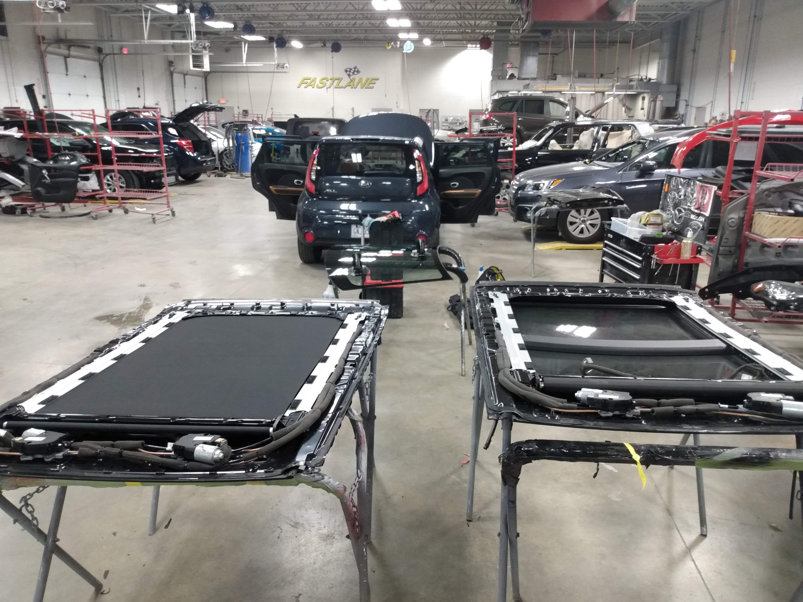
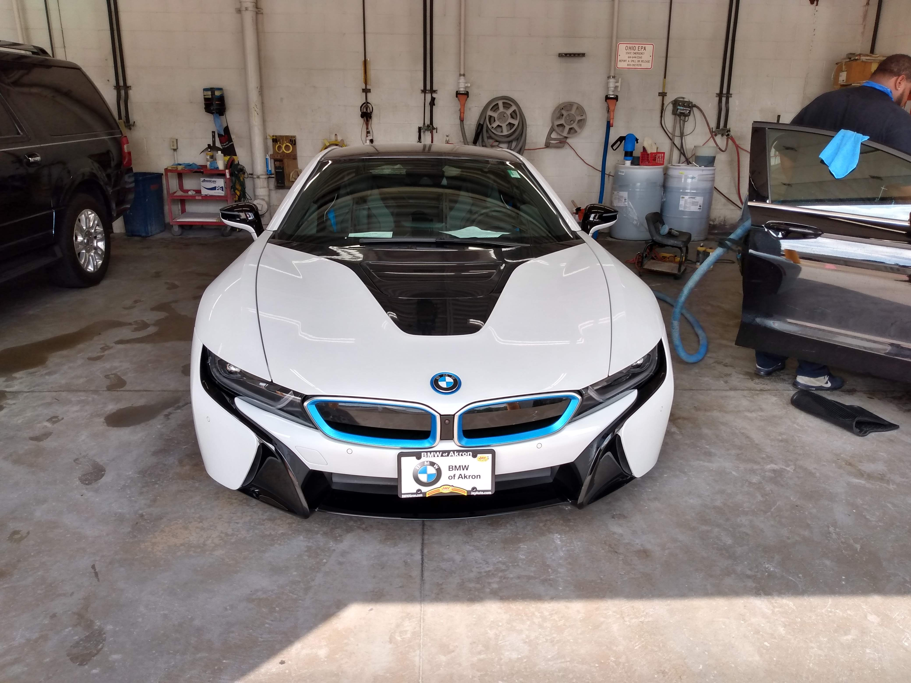

Our Services
Mobile Auto Glass Replacement
Our mobile auto glass replacement service ensures that your vehicle is seamlessly equipped with high-quality, OEM-grade glass.
Whether it’s a windshield, rear window, or side mirror on a personal OR commercial vehicle, we handle it all.
Electronic Calibration
We provide advanced calibration services for your vehicle’s camera and sensor systems, ensuring your auto glass replacement is properly integrated with the vehicle’s safety features.